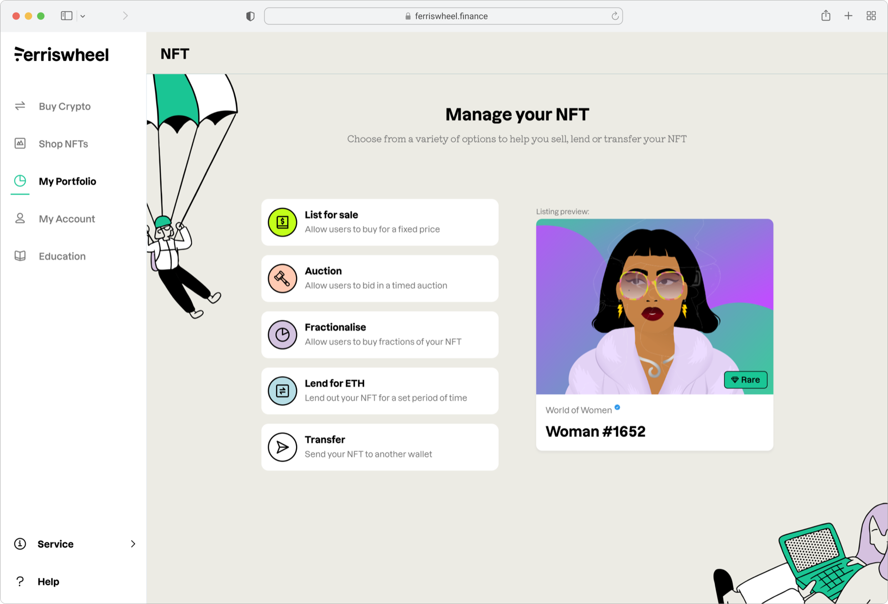
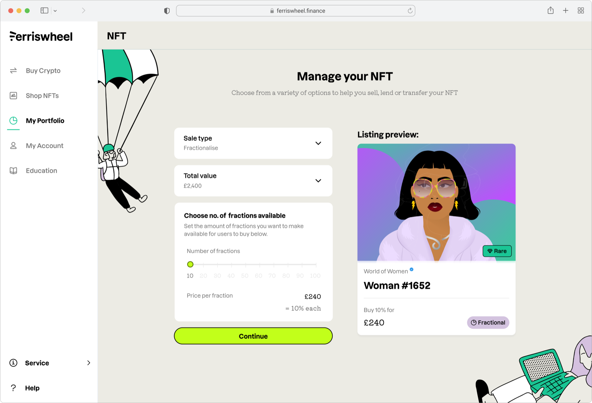
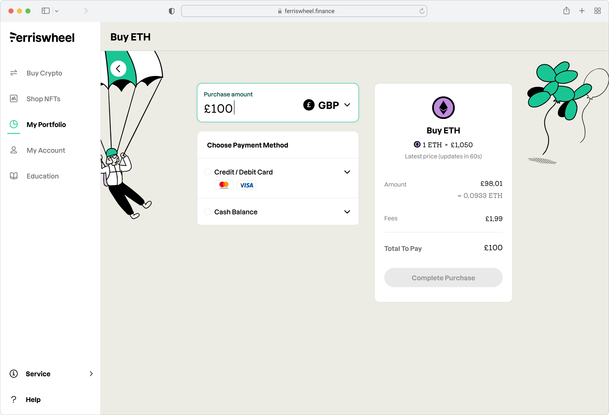

2021 - 2022
Designing trust into a space that had none
Ferriswheel was a fintech startup building a crypto trading platform and NFT marketplace. As the sole product designer, I led the end-to-end design across web and mobile - from user research and a new NFT marketplace through to a full trading platform redesign and rebrand with Koto.
The problem
Everyone was building for experts. Ferriswheel's users weren't experts.
When NFTs hit the mainstream in 2021, the marketplaces that existed were built by crypto natives for crypto natives. OpenSea and Rarible assumed you already understood wallets, gas fees, and blockchain provenance. Ferriswheel had built its reputation on the opposite - making crypto trading feel safe and approachable for people who were new to it. The founders wanted to bring that same simplicity to NFTs.
I surveyed 327 of Ferriswheel's existing users and interviewed 12 in depth. The research confirmed what we suspected but sharpened it: users weren't just unfamiliar with NFTs, they were actively sceptical. They'd looked at existing marketplaces and bounced. They didn't understand where the value came from, didn't trust what they were buying was real, and didn't have the vocabulary to ask the right questions.
I went into OpenSea to understand, but it still doesn't make sense. It confused the hell out of me, so I left.
The marketplace
Curate first, browse later
The research pointed to three things that had to be true for Ferriswheel's users to spend money on an NFT: they needed to understand what they were buying, they needed to trust that it was legitimate, and they needed the platform to narrow the field rather than show them everything at once.
The marketplace was designed around all three. A feed - deliberately borrowing from patterns users already understood - replaced the grid-of-everything approach that other marketplaces used. Collections were curated rather than open-listed. Verification was prominent and explained, not just a badge. And "Boosted NFTs" - collections Ferriswheel had vetted and could offer with reduced fees - gave users a clear starting point when they didn't know where to begin.
The purchase flow was designed to feel like e-commerce, not DeFi. Cart, payment with a credit card, confirmation. No wallet connection required upfront, no gas fee anxiety. The complexity was still there underneath, but the interface didn't expose it until you needed it.
It's really easy, it's not really complicated like other crypto apps. What you're looking for is right there.
NFT marketplace - browse, add to cart, and checkout on mobile.
Manage your NFT - list for sale, auction, fractionalise, lend, or transfer.

Fractionalise - split ownership into affordable shares.

The platform
Stop treating new users like traders
As the NFT marketplace took shape, my remit expanded to the trading platform itself - the original Ferriswheel product. At the same time, the agency Koto was undertaking a major rebrand, and I was responsible for rolling the new brand across all touchpoints.
The trading platform had a problem that mirrored the NFT space: the existing design used a swap form borrowed from decentralised exchanges like Uniswap. Two currency inputs, a swap arrow between them. For someone who trades crypto daily, this is intuitive. For Ferriswheel's users - who the research showed were mostly novices treating crypto as a small speculative investment alongside a traditional portfolio - it was anxiety-inducing and unfamiliar.
I looked at the platforms our users actually referenced in interviews - investment apps, stock trading tools - and argued that Ferriswheel should adopt a "fiat first" approach. Buy means buying with cash. Sell means selling for cash. You'd only see a swap form when converting one crypto to another. This wasn't a surface-level change - it meant restructuring the entire information architecture around a different mental model. The word "fiat" itself was removed entirely.
The redesign unified both products - crypto trading and the NFT marketplace - under one navigation and one design system, with the Koto rebrand applied across everything.
Ferriswheel aren't going to waste their time with coins that aren't feasible. I was under the impression that Ferriswheel were only holding the trustworthy crypto.
Buying crypto with a debit card - fiat first, no jargon.
Desktop checkout - £100 of ETH with a card, as simple as any online purchase.

Reflection
The product earned trust. The market didn't hold.
Ferriswheel had a 4.5-star rating from over a thousand reviews. People kept real money on the platform - for some, it was a meaningful part of their investment portfolio. The core trading product worked, and the design work still holds up.
NFTs were what everyone was excited about in 2021. We built a marketplace that took the space seriously - educated users, curated collections, made purchasing feel as safe as buying anything else online. But NFTs as a category never really became what people hoped they would, and the company's focus stretched across too many bets at once. Ferriswheel eventually closed its doors.
Samir was able to simplify complex ideas and translate them into intuitive design solutions that made it easy for our users to navigate the platform. He was a great advocate for design within the Ferriswheel squad and always pushed for the best possible user experience. His contribution to the development of the platform's design system was indispensable - inheriting and then translating a new brand identity into a cohesive design system that was scalable and flexible enough to evolve over time.